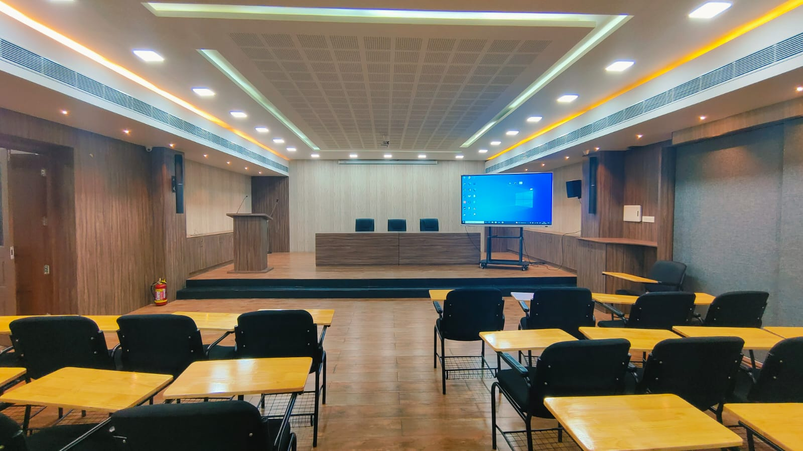
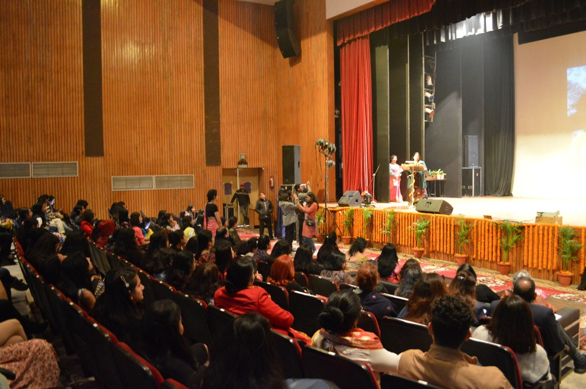

The Seminar Hall at the University College of Engineering is a dedicated space designed for academic discussions, presentations, and interactive sessions.
It offers an intimate yet professional setting that supports seminars, workshops, lectures, and smaller conferences. With comfortable seating arranged to
facilitate engagement, it allows both presenters and attendees to interact closely, fostering a collaborative atmosphere.
The seminar hall is equipped with essential audiovisual technology, including high-definition projectors, microphones, and a sound system to support clear and impactful
presentations. Its setup is flexible, allowing for various seating arrangements such as theater-style for larger groups or round-table setups for workshops and group discussions.
Beyond academic seminars, the hall is also used for departmental meetings, project presentations, and skill development sessions. It serves as a vital platform for
students and faculty to exchange knowledge, share research findings, and connect with industry professionals and guest speakers.
With a dedicated support team to assist with setup and technical needs, the seminar hall ensures that each event runs smoothly. Its design prioritizes accessibility
and comfort, making it a conducive environment for focused.

